Vanderbilt · Anchor's Edge · ATD facilitator guide · print edition
The Coaching Moment, the facilitator guide

Run of show
| Screen | Full (min) | Core (min) |
|---|---|---|
| Welcome / QR | 2 | 1 |
| The mission | 2 | 1 |
| The goal we are targeting | 2 | 1 |
| Objectives | 1 | 1 |
| Agenda | 1 | skip |
| The moment in the middle | 8 | 6 |
| Ask before you tell | 10 | 7 |
| A shape for the talk | 9 | 6 |
| The core idea | 1 | skip |
| Recap quiz | 4 | 3 |
| Capstone commitment | 4 | 3 |
| Closing | 1 | 1 |
| Total | 45 | 30 |
The goal this month serves
Goal 2, Manager Effectiveness at Scale.
Audience
Vanderbilt people managers and team leads in the Anchor's Edge weekly rhythm. Works for 6 to 40 on a call; breakouts run in pairs. No prerequisites; March is the Coaching as the Core Manager Behavior month, putting December's manager standard into daily practice, and this session opens the week.
Room setup
Virtual, instructor led: camera on, deck link in chat, breakouts of 2 available. Learners follow on their own screens via the welcome-slide link or QR. Nothing typed into the deck is saved or sent.
Materials
- Meeting platform with screen share and breakout rooms; deck link ready to paste in chat
- Facilitator machine with the facilitator edition open; notifications off
- Learners on their own devices with the learner link
- Chat open for share-outs; the capstone copy button pastes there cleanly
A week before
- Run the learner edition start to finish and do every interaction honestly; you will demo at least one live.
- Read this month's theme page on the Anchor's Edge dashboard so the goal tie-in is fluent.
- Send the invite with the learner link and one line on what to bring.
The day before
- Test screen share with the facilitator edition; confirm the notes rail is readable.
- Open the learner link on a second device; the QR must land there.
- Run the section interactions once so you can drive them without reading.
30 minutes before
- Welcome slide up as people join; link pasted in chat.
- Close every other tab; silence the machine.
- Breakout rooms pre-configured in pairs.
When things go sideways
If Screen share or the site fails mid-session: Paste the learner link in chat and narrate from your own browser; every interaction runs on learner devices without the share.
If Breakout rooms are unavailable: Run the breakout prompts as 60-second chat storms: everyone types their answer at once, you read the best three aloud.
If A manager names a real team member while sharing an aside: Protect them warmly and immediately: 'Hold that. Roles, never names.' Coaching moments belong to the person; a group call is never the place to spend one.
If A manager insists telling is faster and coaching is a luxury: Agree, once. Telling wins the moment; coaching wins the quarter. Do the math aloud: ten minutes of coaching against the tenth repeat of the same stuck.
Tough questions, ready answers
Q: What if I ask a good question and get silence?
Let it sit for five full seconds; silence usually means thinking, and filling it takes the thinking back. If it truly stalls, shrink the question: 'what is one thing you have tried?' A smaller true answer beats a bigger rescued one.
Q: Isn't GROW just another corporate acronym?
Treat it as an order, never a script: what they want, what is true, what they could try, what they will do. You can run all four beats without ever saying the word GROW. The acronym is a bookmark; the order is the tool.
Q: What if the aside is really a performance problem?
Coaching and performance management are different conversations, and both are yours. If the gap is willingness or repeated missed standards, name it directly through the performance process. Coach the growth asides; never use coaching questions to hint at a problem you owe them plainly.
Copy-paste templates
Pre-work invite (paste into the calendar invite)
Subject: Monday, 45 minutes on catching coaching moments. Bring the memory of one recent 1:1 that stayed on status the whole way through. You will never be asked to name anyone. Live and interactive; have the session link open on your own screen.
7-day pulse (send one week after)
Subject: Did you catch the moment? Three lines, reply whenever: 1) Did the coaching moment on your card happen? 2) What did the person figure out without being told? 3) What aside are you listening for next?
After the session
Seven days out, send the pulse: 'Did you catch the moment on your card? What did the person figure out without being told? What aside are you listening for next?' Count of coached moments feeds the manager-standard behavior metric for the month.
Welcome / QR Full 2 min · Core 1
Get everyone into the deck on their own screen and set the tone: 45 minutes, live, hands on.
Say
“Welcome to Manager Monday. Scan the code or click the link in chat so this session runs on your screen too. Forty-five minutes, one focus: Spotting the coaching moment hiding inside the status conversation.”
Do
- Slide up as people join; link pasted in chat every few minutes.
- State the norm once: type into your own screen, nothing you enter is saved or sent.
Watch for: People lurking without the deck open. The interactions only land if the deck is on their screen.
Transition: “Before the topic, thirty seconds on why Vanderbilt is asking for this hour.”
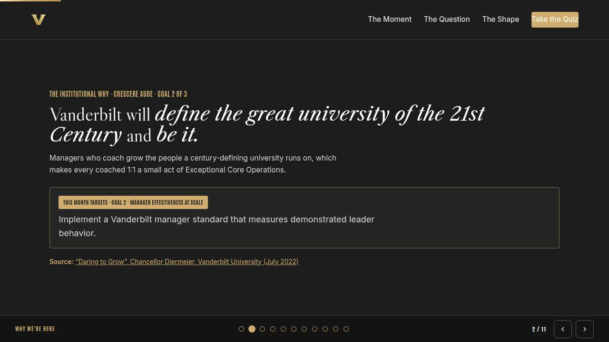
The mission Full 2 min · Core 1
Anchor the session in the Chancellor's charge so the next 40 minutes read as mission work, not admin.
Say
“This year of learning hangs off one sentence from the Chancellor: Vanderbilt will define the great university of the 21st Century and be it. Managers who coach build the people a century-defining university runs on. Every status update you turn into a growth conversation is Exceptional Core Operations at the smallest scale: one manager, one person, ten minutes.”
Do
- Read the mission line slowly, once.
- Point at the tie-in line and let it sit; no discussion needed here.
Transition: “That is the why. Here is the number we are moving.”
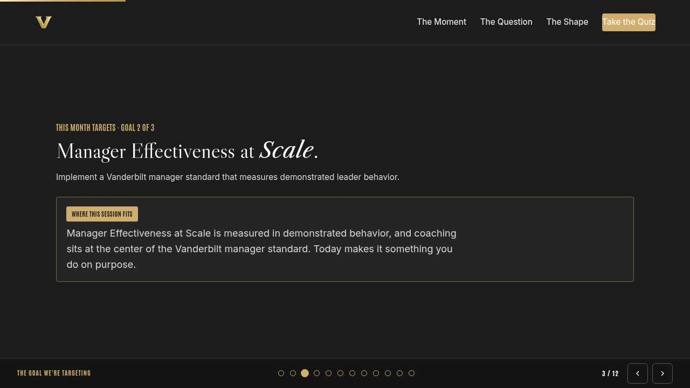
The goal we are targeting Full 2 min · Core 1
Name the enterprise goal this month serves.
Say
“Every month of Anchor's Edge lands on one of three enterprise goals. This month is Goal 2, Manager Effectiveness at Scale: Implement a Vanderbilt manager standard that measures demonstrated leader behavior. Manager Effectiveness at Scale is measured in demonstrated behavior, and coaching sits at the center of the Vanderbilt manager standard. Today makes it something you do on purpose.”
Do
- Read the goal once, plainly.
- One line, not a lecture: this session is one of the moves that serves it.
Transition: “Here is what you will be able to do in 45 minutes.”
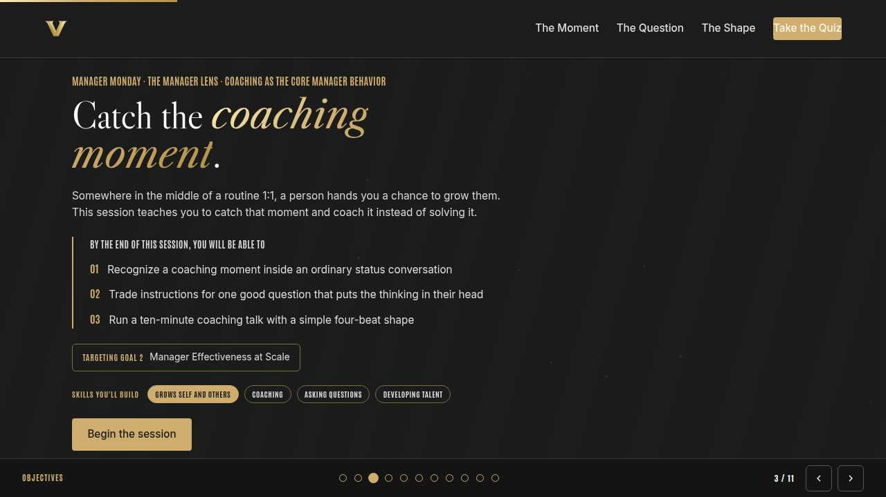
Objectives Full 1 min · Core 1
Set the contract for the session in under a minute.
Say
“By the end of this session: recognize a coaching moment inside an ordinary status conversation; trade instructions for one good question that puts the thinking in their head; run a ten-minute coaching talk with a simple four-beat shape. That is the whole contract.”
Do
- Read the three objectives briskly; do not elaborate yet.
Transition: “Three stops to get there.”
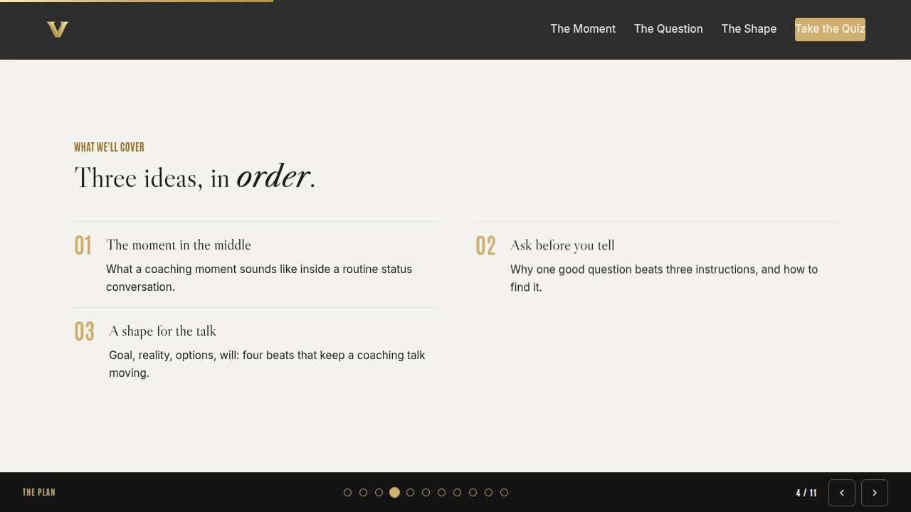
Agenda Full 1 min · Core skip
Show the path so the room can pace itself.
Say
“Three stops: the moment in the middle, ask before you tell, a shape for the talk. Each one has something to play with, so keep the deck open.”
Do
- Point once at each stop; ten seconds each.
Transition: “Stop one.”
Core path: Core: skip the read-through, gesture at the slide in passing.
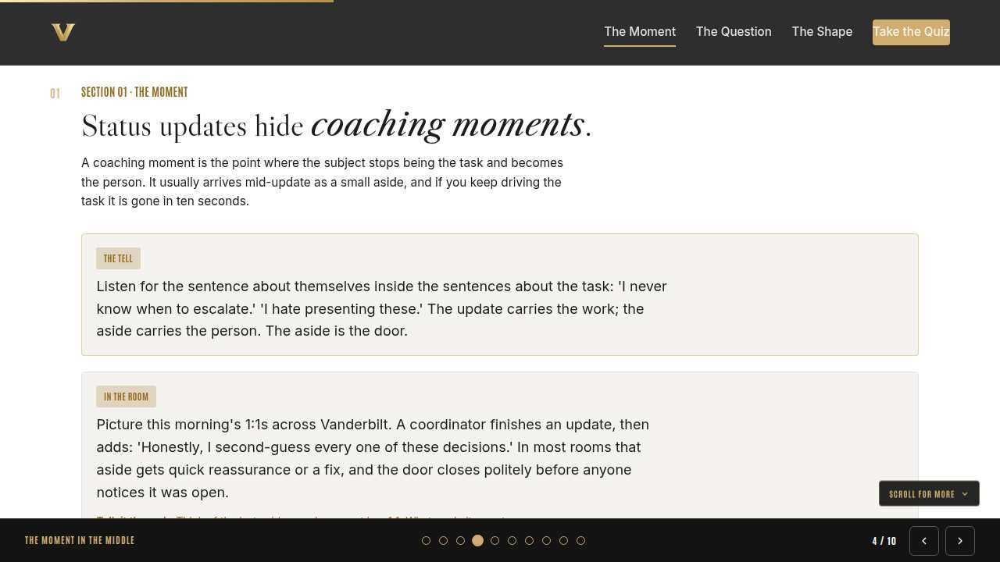
The moment in the middle Full 8 min · Core 6
Teach managers to hear the coaching moment: the aside about the person inside the talk about the task.
Say
“Here is the trap this month is built around: 1:1s that are status meetings with better branding. Manage the task, absolutely; the task deserves it. But somewhere in the middle of the updates, people hand you a sentence about themselves, and most of us drive right past it because the task is louder. This section trains your ear to stop for it.”
Do
- Read the concept card aloud once; the two aside examples do the teaching.
- Share the In the room card and let the coordinator's aside land; ask what usually happens next in real rooms.
- Run the discussion prompt, then the breakout on the aside they drove past, 90 seconds each way.
Ask
“What did the last aside you drove past sound like?”
Expect:
- Quotes like 'I always mess this up' or 'I hate this part'
- Some managers cannot remember one, which is itself the point
Respond: Both answers teach. If asides come easily, the ear exists and needs aiming. If none surface, the task has been drowning out the person, and this week is for listening differently.
Debrief: Coaching moments are handed to you mid-task. The aside about themselves is the door, and it stays open about one question long.
Watch for: Managers who hear 'coach everything.' Be plain: most of the 1:1 stays task, and that is right. The skill is catching the one moment that is about the person.
Transition: “You caught the moment. What you say next decides who does the thinking.”
Core path: Core: skip the breakout; ask for one remembered aside in chat instead.
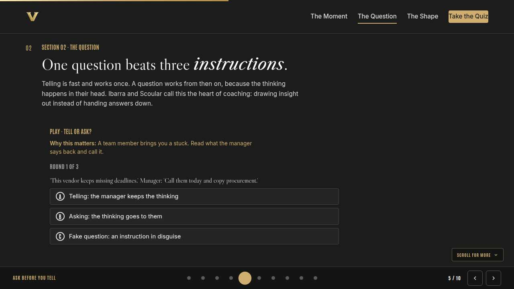
Ask before you tell Full 10 min · Core 7
Replace the instruction reflex with one genuinely open question that transfers the thinking.
Say
“So the door is open, and the reflex now is to be useful: three instructions, problem handled, next agenda item. Telling works, once. The reason we ask instead is where the thinking happens. Your instruction runs in your head. A real question runs in theirs, and what runs in their head is what they own. One honest question you cannot answer for them beats three instructions you can.”
Do
- Run Tell or ask? live; everyone plays on their own screen.
- After round three, pause on the fake question; ask the room where they have heard one this month.
- Run the breakout: rewrite one real instruction as one open question.
Ask
“What makes the fake question in round three worse than plain telling?”
Expect:
- It pretends to hand over the thinking while keeping it
- It adds judgment on top of the instruction
- People learn to hear every question as a trap
Respond: All three. Plain telling is at least honest about what it is. A fake question spends trust, and trust is what your real questions will need.
Debrief: If you already know the answer you want, it is telling. Say it honestly, or ask something you genuinely cannot answer for them.
Watch for: Managers hunting for the perfect question. Lower the bar: 'what have you tried?' and 'what would you do if I were out this week?' cover most moments.
Transition: “One question opens the thinking. A light shape keeps it moving.”
Core path: Core: run the trainer, skip the breakout, take one rewrite aloud.
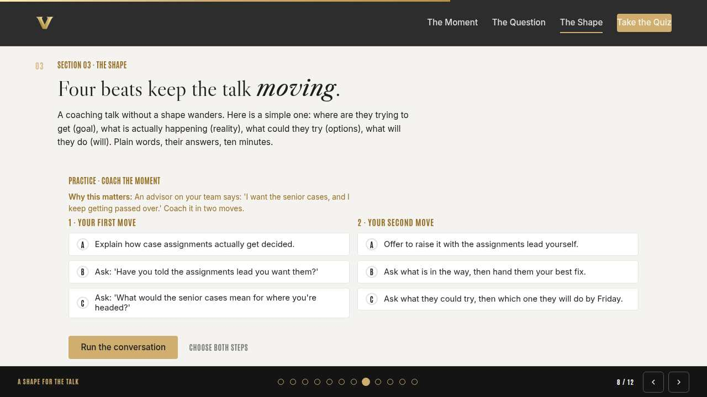
A shape for the talk Full 9 min · Core 6
Give the coaching talk a four-beat shape in plain words: goal, reality, options, will.
Say
“A coaching talk with no shape wanders and dies at the next calendar alert. Here is a shape in plain words: where are they trying to get, what is actually going on, what could they try, what will they do. Coaching books call it GROW; you need the order, and the last beat needs a date. If you want deeper reps, this month's LinkedIn Learning pick is Sara Canaday's Coaching Skills for Leaders and Managers, and the navigator-led GROW practicum runs alongside it. Optional, and worth it.”
Do
- Run Coach the moment; two minutes for both choices, then run it.
- Ask one volunteer to read their outcome aloud, weak or strong.
- Point at the pattern: goal before options, their options before yours, a will with a date.
Ask
“Why does the rescue move in slot two feel so right and work so badly?”
Expect:
- It is fast and feels generous
- It proves the manager's value
- It takes the ball, so the skill never transfers
Respond: Exactly. Rescue solves this week and buys next month's version of the same stuck. Coaching is slower once so it can be faster forever.
Debrief: Goal, reality, options, will. Their words at every beat, and the will beat leaves with a date attached.
Watch for: Managers running the four beats as an interrogation checklist. It is a shape for listening; two beats done well beat four beats done fast.
Transition: “Quick recap, then you pick your moment and build the card.”
Core path: Core: everyone runs the builder solo; skip the read-aloud.
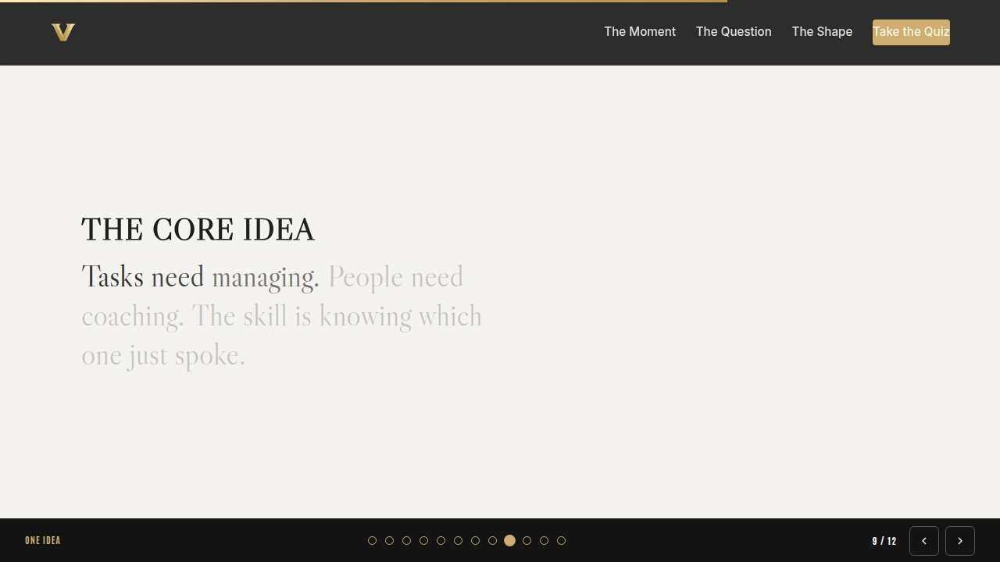
The core idea Full 1 min · Core skip
Land the one sentence the session exists to install.
Say
“If you keep one sentence from today, this is it. Read it once, out loud: Tasks need managing. People need coaching. The skill is knowing which one just spoke.”
Do
- Pause two beats after reading; the word animation carries it.
Transition: “The recap makes it stick.”
Core path: Core: pass through in stride; the sentence reads itself.
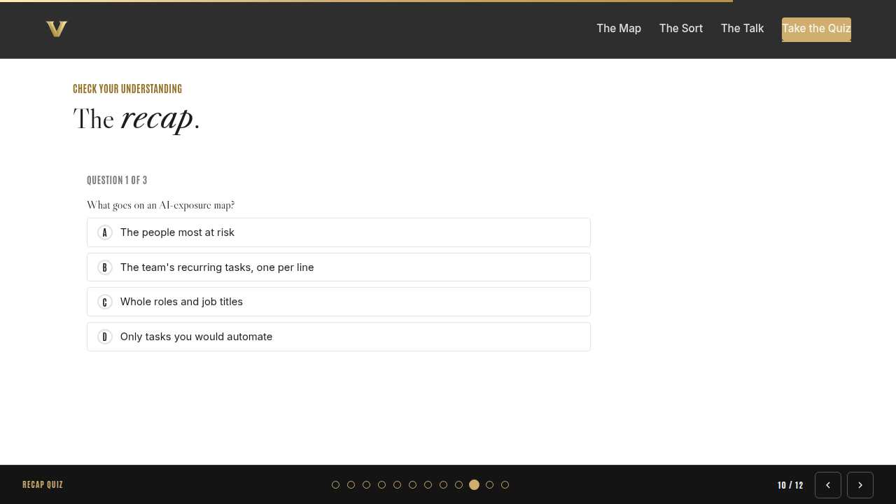
Recap quiz Full 4 min · Core 3
Score the learning while it is fresh; wrong answers are teaching moments, not failures.
Say
“Three questions, on your own screen. Answer honestly; the explanations are where the learning sticks.”
Do
- Give the room 90 seconds to run it individually.
- Ask for a show of results in chat: how many got 3 of 3?
- Read out the explanation for whichever question drew the most misses.
Watch for: Rushing past the why lines. The explanations carry the teaching.
Transition: “Now point it at your real week.”
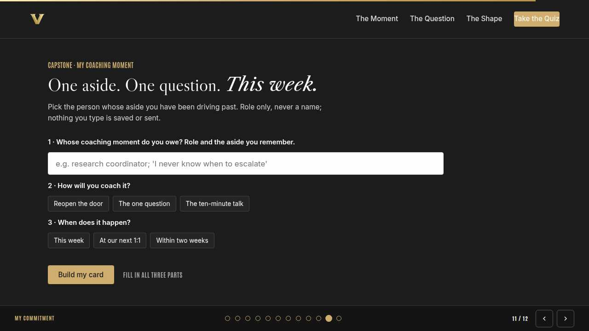
Capstone commitment Full 4 min · Core 3
Convert the session into one named, dated action per person.
Say
“Now make it real. One person whose aside you have been driving past, role only. Pick how you will coach it, pick the window, build the card, and copy it somewhere you will see it before your next 1:1. Two minutes, quiet, go.”
Do
- Two quiet minutes; everyone builds their own card.
- Invite two or three volunteers to read their card aloud or paste it in chat.
- Remind: copy the card somewhere you will see it this week.
Watch for: Vague entries. Nudge for a name-able situation and a real date.
Transition: “Last slide.”
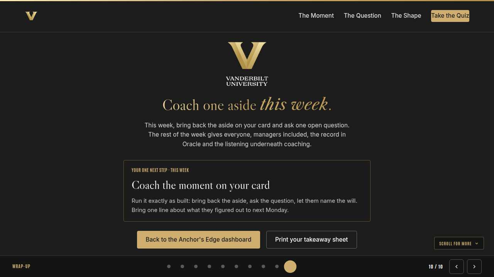
Closing Full 1 min · Core 1
End with the next step and where this thread continues.
Say
“You leave with an ear for the aside, one real question, and a four-beat shape. Coach the moment on your card this week. Tomorrow's Take-Off Tuesday is for everyone, you included: capturing development goals and coaching notes in Oracle, so the growth you coach goes on the record. Thursday's Thrive Thursday builds the empathy underneath all of it, hearing what isn't said. And if you want more reps, Sara Canaday's Coaching Skills for Leaders and Managers is this month's LinkedIn Learning pick, with the navigator-led GROW practicum alongside it.”
Do
- Point at the next-step card; one sentence.
- Name the rest of the week's rhythm: the other sessions echo this month's theme.
Generated from facilitator/notes.json. The on-screen facilitator edition lives at ./ alongside this guide.